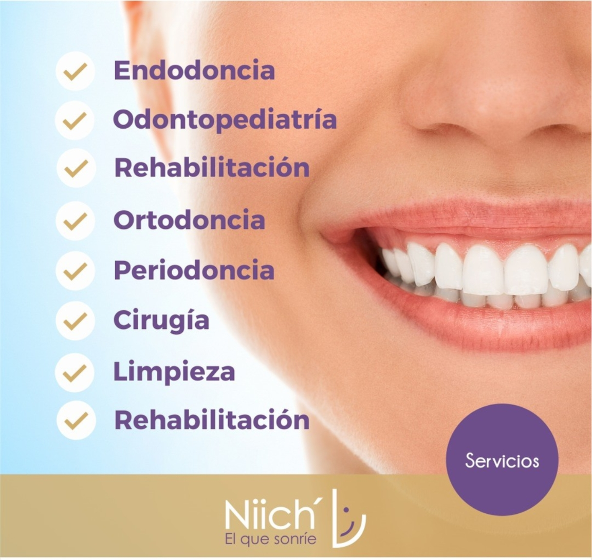

¿Cómo saber si necesitas ir al dentista? En este artículo te explicamos todas las señales que tu cuerpo te manda para indicarte que algo no anda bien con tu salud dental.
Clínica Denta en Mérida
Clínica dental con especialidades para ti y toda tu familia

Let's Take Care of your Teeth
¿Qué es la endodoncia? En este artículo te explicamos qué es la endodoncia y cuándo es necesario realizarla.
¿Cuáles son los errores más comunes al cepillarse los dientes? En este artículo te explicamos cuáles son los errores más comunes al cepillarse los dientes y cómo evitarlos.

¿Cuáles son los mitos y realidades del enjuague bucal? En este artículo te explicamos cuáles son los mitos y realidades del enjuague bucal.
¿Por qué nosotros?
Si te preguntas ¿POR QUÉ NOSOTROS?: Te daré un par de razones, de corazón:
Porque en Niich siempre pensamos en ti, en tu bienestar, en lo mejor para tu sonrisa y para el cuidado de tu salud bucal.
Porque en Niich trabajamos con respeto a tus límites, vemos en tu un ser humano y procuramos atenderte en un ambiente confortable que te mantenga traquilx durante toda tu visita odontológica.
Por si fuera poco, te daré una tercera razón... Solo por el gusto, porque Niich nos gusta verte sonreír.
¡Llamanos!
Estamos disponibles para ti, agenda tu cita hoy mismo!